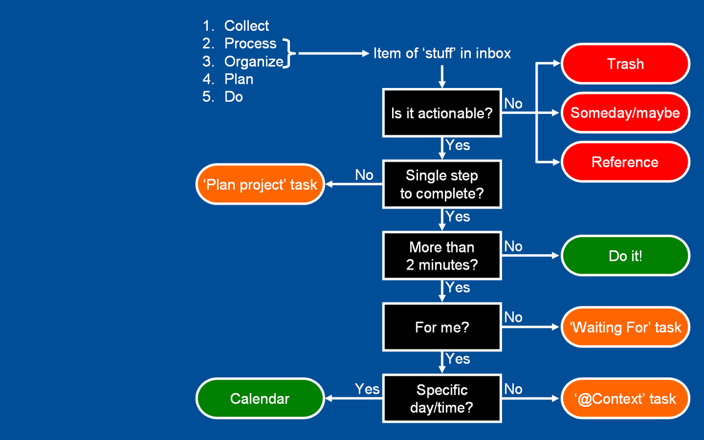

尽管去做-无压力工作艺术
Table of Contents
我认为高效是一种非常有价值的东西。也许你目前从事着十分重要、妙趣横生或者值得赞扬的工作；又或许并非如此，但是你仍不得不面对这一切。在第一种情况下，你希望所投入的时间和精力收获尽可能丰厚的回报。在第二种情况下，你希望能够尽快地投入到其他工作中去，同时不遗留任何令你念念不忘的问题。
本书写作的宗旨在于：教你在有需要或期望之时，如何才能尽管去做达到高效和轻松的最佳境界。我已经探求了很长一段时间（也许你也曾尝试过），一直希望找到下列问题的答案，即做什么，什么时间去做，以及如何去做。
这本书分为三个部分：
- 系统的介绍方法论
- 如何实施这个方法
- 如何将这些方法和模式融入到生活中去
通向从容之道
第一章 新情况，新做法
焦虑是由于缺乏控制力，组织管理、准备和行动不足所造成的。
这里介绍的方法的目的：
- 抓住所有的事情（现在，将来；大的，小的），把它们放入一个脱离大脑的逻辑系统
- 训练自己在接受一切“输入信息”的前期作出决定。
缺乏洞察力，生活就会拒绝你。无论是擦窗户还是撰写宏篇巨著都是如此。
让我们反省一下，如果你在任何程度上、任何时间内都能够随心所欲地控制自己的一切事物，情况会是怎么样呢？如果你能够 100%地把精力投入到工作中而不受任何外界的干扰，情形又会是怎么样呢？
世界级的划船手克雷格·兰伯特（Craig Lambert）曾在《碧波上的心境》（《Mind Over Water》，霍顿·米夫林公司 1998 年出版）一书中这样描述这种感受：
划船手们用这样一个词语来描述这种无摩擦的状态：摇荡。使我们回想起， 在后院荡秋千时的那种惬意和欢娱—一种简单的循环往复的运动，完全凭借着来自秋千自身的冲力。秋千承载我们，我们丝毫不需要用力。我们荡起双腿，促使秋千在空中划过的弧度越飞越高，但是，这主要是地球引力的功劳。 与其说我们荡秋千，还不如说我们被荡了起来。船推动着你前行，是船身渴望着快速地向前，在它的航线上，在它的自然状态中，速度在吟唱着。我们的任务仅仅是与船身并肩作战，拼命地挥桨加快速度，避免拖其后腿。而过于用力又会阻碍船速。努力变成了为努力而努力，其结果适得其反，反而在努力中又化解了其自身。形形色色一心往上爬的人拼命地想挤进贵族阶层， 然而，他们挖空心思却只能够证明自己并不身属此类。贵族们并不需要努力， 他们早已经到达了这种境界。荡秋千就是这样一种到达了的境界。
任何没有找到应有的位置和恰当的存在方式的事物，都会盘踞在我们的脑海中，成为悬而未决的问题。
- 管理承诺时的基本要求
如果希望出色地管理好所有的工作，那么，你需要做到下面几点：
- 如果这件事总占据着你的头脑，你的思维就会受阻。任何一件你认为没有完成的事情，都必须置于一个客观可靠的体系中，或者是我称之为“工作篮”的工具之中—必须经常回访并且清理它。
- 你必须明白你的工作到底是什么。你还必须作出判断：需要采取什么行动来推动工作的发展进程。
- 一旦决定了需要采取的行动方案，你必须在某一个你会经常查阅的体系中安排组织好这些行为的提示信息。
- 检验这种模式的一个重要训练
你拿笔记下来目前盘踞在你大脑中的那些最重要的工作或事情。哪一件事最让你心烦意乱？哪一种情况最能够分散你的注意力？哪一个问题令你兴趣浓厚？或者哪一种局面以其他的方式消耗了你大量的注意力？
现在，请写下为了推动事情的进程，紧接着你需要采取的具体行动是什么。如果你目前除了要马上结束这件事，再无其他的事情要处理，那你现在打算去哪里？打算采取什么行动步骤呢？
- 知识的本质
要弄清人们工作生活中涌现出的各种事物的真实面目，要决定为此需要采取的种种行动，都将消耗人们大量的气力。因此，许多人都对此产生了抵触情绪。实际上，我们从来没有学过在开始行动之前进行周密的思考。大部分的日常活动（如一家人的吃喝拉撒，照顾孩子）早已被明确地定义出来了，但几乎没有人认为，他们有必要先花些气力屏气凝神地思考一下，明确预期的结果。然而事实上，思考后果是促使希望转化为现实的最为有效的手段之一。
- 为什么有些事情总是萦绕在你的心头
在通常情况下，你对一些事总是念念不忘，这是因为你希望它们当前的状况能有所改善，
- 你还没有明确它们的预期结果是什么？
- 你还没有决定下一步的具体行动到底是什么？
- 还没有把后果和即将采取行动的提升信息存入到你所依赖的体系中去。
- 把一切赶出你的大脑
没有理由两次产生同一想法，除非你对它情有独钟。
大多数人都长期处于这样或那样的精神紧张状态，由于耗时持久，他们全然意识不到这种状态的存在。就像万有引力无时不在，以至于感受万有引力的人们甚至意识不到压力的存在。只有当人们彻底地摆脱了这种压力的束缚， 拥有一种完全不同的体验时，他们才可能认识到自己曾经承受着多么大的压力啊。你能够摆脱这种压力的束缚吗？你肯定会的。下面的内容将告诉你具体的做法。
第二章 横向管理工作进程的 5 个阶段
- 收集一切引起我们注意力的事情
- 加工处理，确定它们的实质和解决方法
- 整理得出结论
- 把它们列为我们的行动方案
- 行动
要了解需要收集哪些信息，以及如何富有成效的完成这个工作。这里我们要说明的是如何确保一切必要的事情统统得到了收集并且存储在你大脑之外的某个地方。
 这个图来自于一个博客网站，它很清楚的描述了我们应该如何采取行动。
- 回顾的内容和时机
如果你按照推荐的方法建立个人的组织管理系统，拥有一个“工作任务”清淡，一个日历清单，下一步行动清单和一个待处理清单，大概就别无所求了。 完成工作日程表的检查后，可能需要查看“下一步行动”清单。 这类清单记载着一些已得到预先确定的工作的详细目录，一旦时间允许，就可以启动实施。
根据需要，经常地回顾你的清单，把他们 赶出你的大脑。
- 成功的关键：每周查阅
每周查阅也就是做下面的事情：
- 收集和加工处理所有的材料
- 回顾和检查你的系统
- 更新各类清单
- 做到清洁 清楚实时和完整
大多数人在清理、了结、阐明了他们所有的协议，并与别人重新审视了这些后，都会感到心满意足、状态良好。
- 选择行动方案
在某一时刻，决策行动的模式
- 环境
- 有多少时间
- 有多少精力
- 重要性
评估每日工作的三种模式：
- 处理事先安排好的工作
- 处理随时冒出来的事件
- 定义你自己的工作
回顾和检查工作的 6 个标准模式。
事情的重要程度是促使你做出选择的原动力。为了明确到底哪些工作才是最重要的，我们必须搞懂我们的工作到底是什么。至少可以从 6 个不同的角度加以衡量。
- 5 万英尺以上：生活
- 4 万英尺：3~5 年的展望
- 3 万英尺：1~2 年的目标
- 2 万英尺：责任范围
- 1 万英尺：当前的工作
- 跑到：目前的行动
第三章 纵向管理：巧妙制定工作计划
第二部分
第四章 确定时间、空间和工具
第五章 收集阶段：填充工作篮
训练自己发现那些没有到位的事情。
第七章 管理阶段：建立好清单
理清内心深处的计划和行动。例如，“定期参加体育锻炼”转化为“建立定期运动的计划”。
第八章 检查阶段：回过头看看
只要你保证在适当的时间查阅适当的资料，每天几秒钟也就可以回顾检查所需要的全部时间。
- 每周回顾检查的力量
大多数人无论最初有多么好的基础，恐怕也不能跟上紧张而快速的生活节奏。 我们许多人似乎天性就是这样，总会让自己陷入各种事情中不能自拔。工作时，我们把一天的时间安排的满满的，一个会议接一个会议；业余时间里， 我们还会有不断的冒出种种想法。我们身不由已的卷入种种纠纷当中，而这些任务同时又具有一种潜在的力量，可以促进我们的创造性思维发生发展。 正是这种旋风式的生活模式，造就了每周回顾检查的卓越功效，这种功效在捕捉信息、再次评估及重新安排时间的过程中逐渐加强，使你保持平衡。因此，当你试图完成每一天的工作计划时，根本不可能同时完成这个极为必要的再分组活动。（这段到底在说啥） 回顾检查活动还将在你每周处理新信息时，在直觉上磨练你对重要工作的判断力。你必须学会说不，更快地面对更多的事物，保持举重若轻，轻松自如。划定某一专门的时间段进行全盘思考，这将对简化你的工作大有帮助。
第九章 行动阶段：选最佳的方案
第十章 创造性地思考工作
准备行动，创造条件，对工作进行一些创造性的思考。然后，你就可以把大多数人远远地抛在脑后了。
第 十一章 养成收集和自省的习惯
焦虑和内疚并不是因为承担太多的工作而造成的，而是由于你撕毁了同自己签订的协议而导致后果。
第十二章 下一步行动
领先的秘诀是开始行动，开始行动的秘诀在于把复杂的大任务分解为细小的工作。